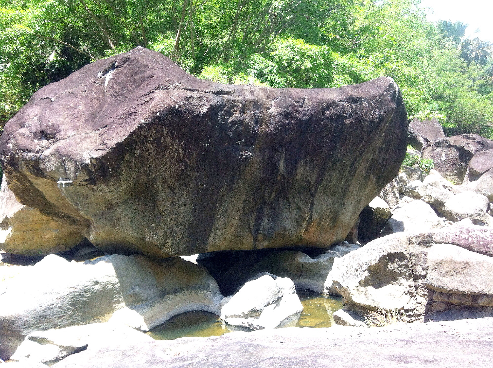
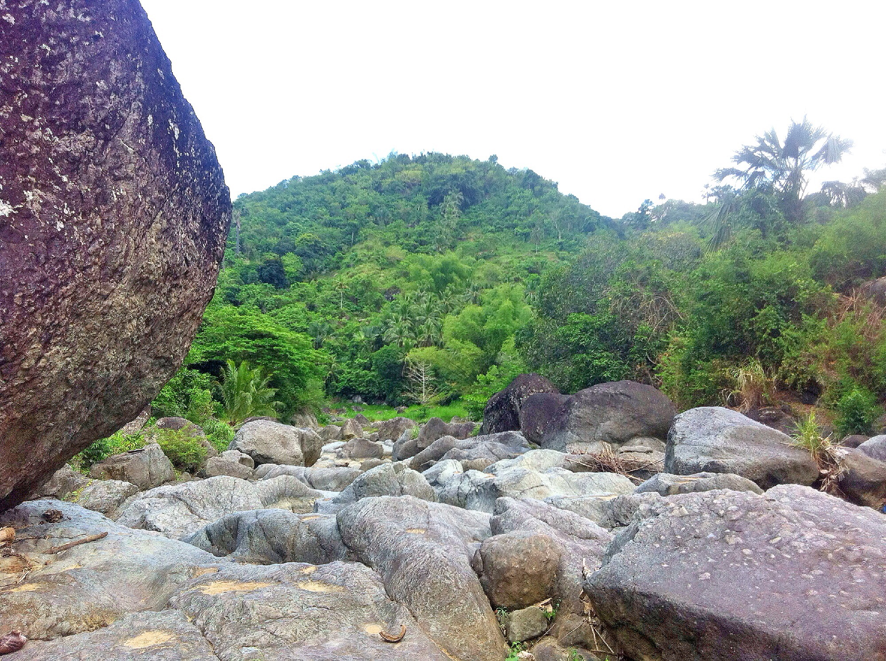
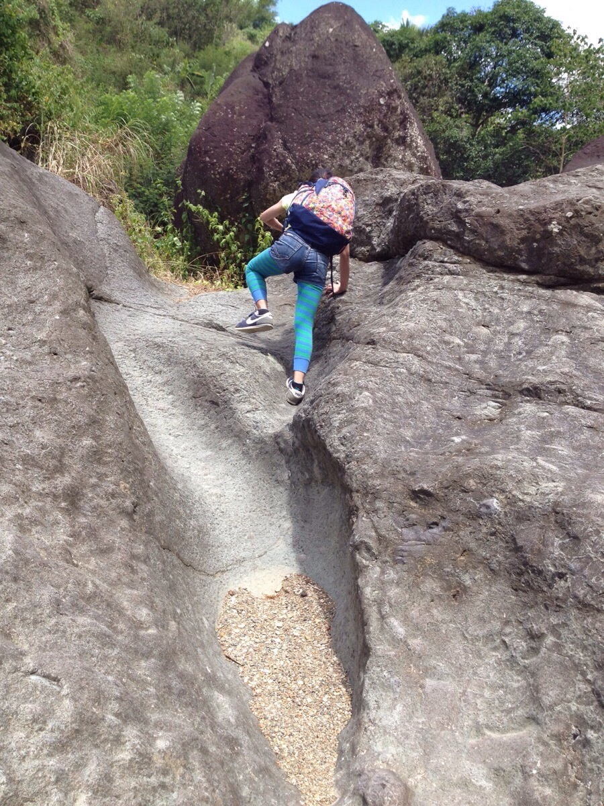
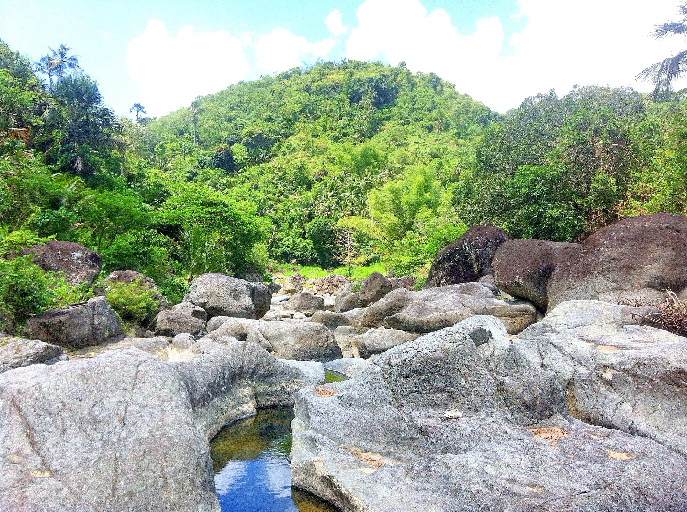
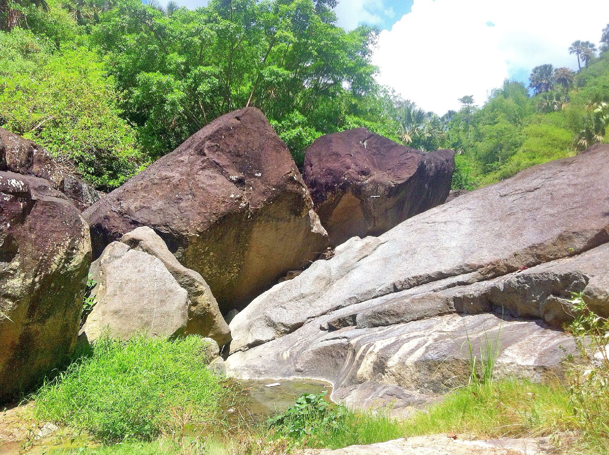

Nature / LILOAN, CEBU
Mulao Stone Ark
Discover nature’s own sculptural masterpiece.





GET TO KNOW THE PLACE
A closer look.
This unique rock formation is located in Barangay Mulao. Its name was inspired by the famous Bible Story, Noah’s Arc. It has two rocks underneath that make it look like an arc standing in its foundation. This authentic rock formation is one of the remarkable natural resources in Lilo-an. It suits the adventurers’ leisure pursuit, especially on its way wherein you have to hop over the stones. The vicinity was surrounded by different sizes of stones, making it unique. The Municipality of Lilo-an is promoting this site to be one of its Tourist destinations with prohibitions to those who were not fit to trek to the crest and had fears of the cliffs. Precautions should be strictly observed on this site.
Keep exploring Liloan ↗